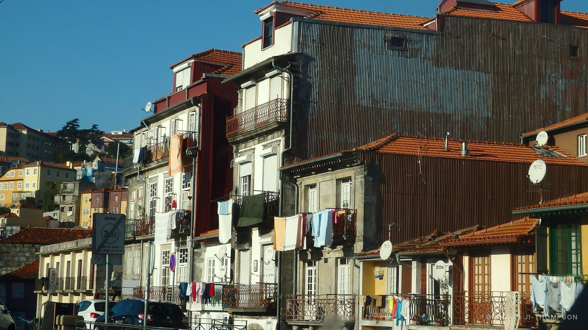
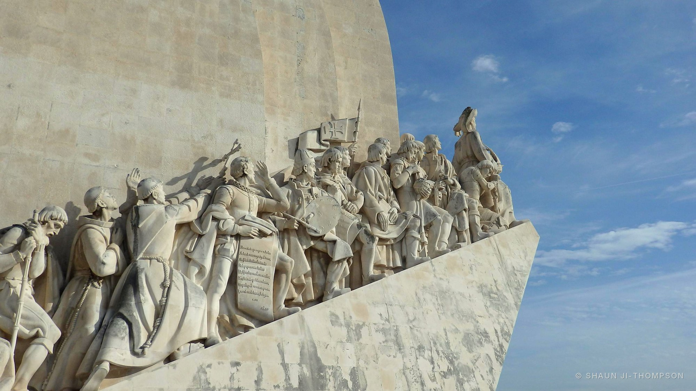
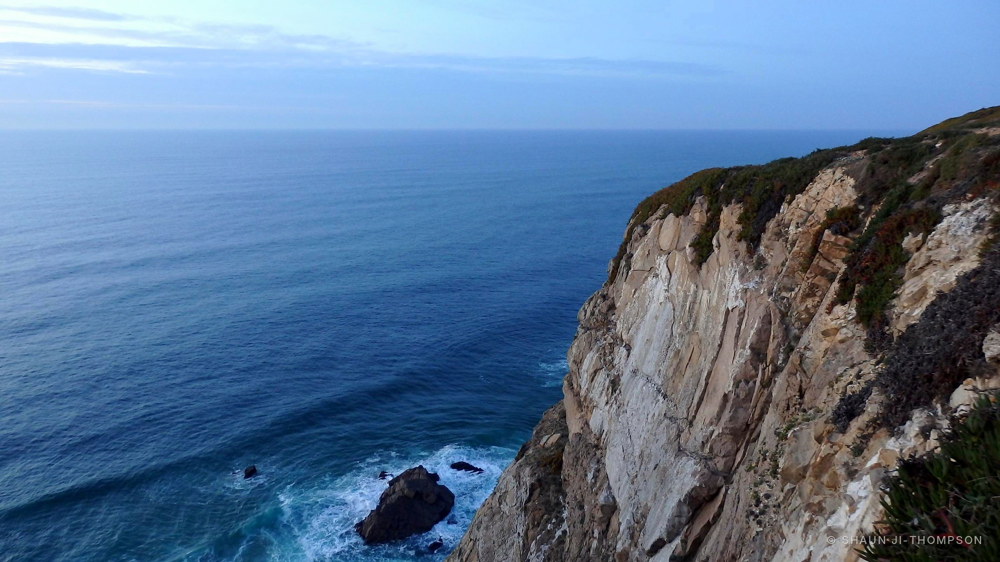

Latest essay · Published Nov 2026 · Travelled Dec 2015
Portugal
Photos from Portugal in December 2015, the last stop on the overland route from Singapore.
Porto · Aveiro · Lisbon · Cabo da Roca
Read the photo essay